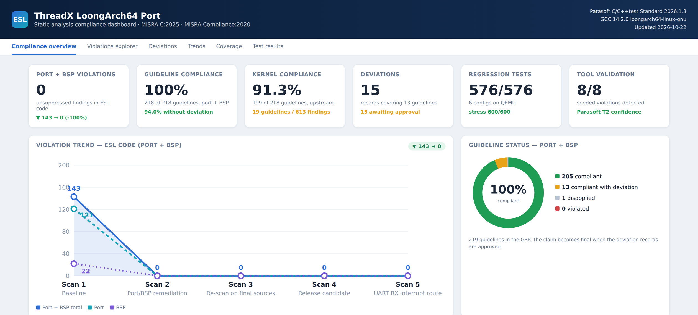
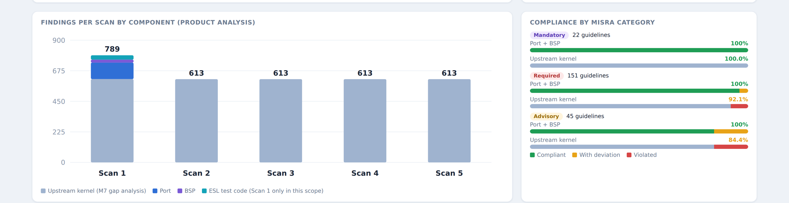
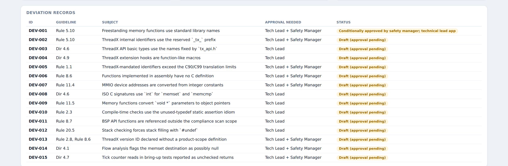
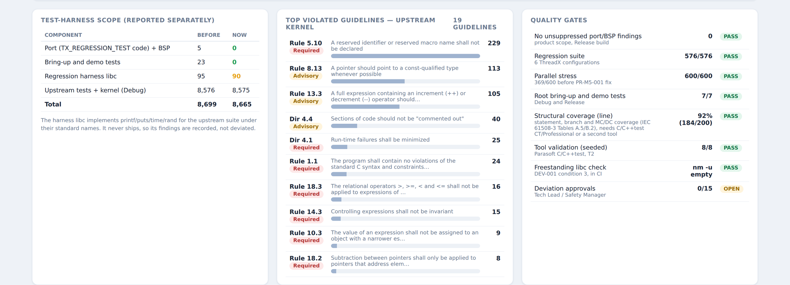
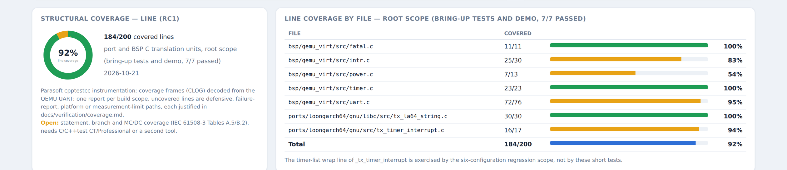

IEC 61508-3 SC 3 process · MISRA C:2025 · Parasoft C/C++test
From no port, no BSP, no MISRA
to an IEC 61508 SIL 3 release candidate,
in four days
A technical walk through the port of Eclipse ThreadX 6.5.2 to the Loongson LoongArch64 architecture: low-level assembly, the QEMU virt board support package, the upstream regression suite on QEMU, MISRA C:2025 with Parasoft C/C++test, structural coverage on target and the full SIL 3 evidence trail. Every code sample is real source from the tagged tree; every console line is real tool output.
For software engineers and DevOps in automotive and industrial control. Source and evidence: github.com/zuwasi/threadx-loongarch64
The project in one page
Eclipse ThreadX had no LoongArch port. ESL wrote one, plus a BSP for QEMU's LoongArch virt machine, and produced the IEC 61508-3 work products a SIL 3 assessment expects, with ThreadX itself kept unmodified as a pinned submodule.
v1.0.0-rc1ports/loongarch64/gnu/): 7 assembly files and 3 C files: context save and restore with full integer and FP state, scheduler, atomic interrupt posture, stack build, tick, freestanding memcpy/memmove/memset/memcmp.bsp/qemu_virt/): reset entry, linker script with a stack guard, constant timer, NS16550 UART with interrupt-driven receive through PCH-PIC and EXTIOI, fatal handler.Table of contents
The tabs at the top of every slide are this index; the Home button returns to the cover.
tx_port.h, context frames, vector entry, why assembly matters, two real defects
05BSP and QEMU validationStartup, interrupt route, run harness, 576/576 regression, CI
06MISRA C:2025 with ParasoftPlan, analysis, dashboard, 143 → 0, deviations, kernel gap, Klocwork mapping
07Structural coverageWhy SIL 3 needs it, Parasoft on target over UART, results and gaps
08Timeline and statusFour days, hour by hour; what is still open; reproduce it
Who are ESL
Embedded software consultancy: optimizing, migrating and certifying embedded projects

LinkedIn profile
Open-source ThreadX here; a certified path when you need one
PX5 RTOS
px5.c, px5_binding.s).RTOSX
Loongson and LoongArch: a domestic CPU line with its own ISA
| Period | ISA | Typical parts | Notes |
|---|---|---|---|
| 2001 to 2020 | MIPS32 in the 1-series embedded parts; MIPS64 with Loongson extensions in the 2/3-series | Godson-1, Loongson 1B/1C101, 2E/2F, 3A1000 to 3A4000 (GS464 cores) | Origin at the Institute of Computing Technology, Chinese Academy of Sciences |
| 2020 to 2021 | LoongArch: announced 2020, shipped 2021 | 3A5000 (LA464 core), 3C5000 server | Own ISA, not a MIPS fork; MIPS binaries no longer run natively |
| 2022 onward | LoongArch64 (LA64) | 3A6000 (LA664), 2K-series SoCs (2K0500, 2K1000LA, 2K2000) | Desktop, server and embedded/industrial SoCs |
| Small MCUs | 1C101 still MIPS32; newer 1C102/1C103 use the LA132 (LoongArch32) core | 1C-series controllers | Low-end control and IoT |
qemu-system-loongarch64 -M virt -cpu la464: the LA464 core of the 3A5000 class, PLV0, LP64D ABI, FPU on, LSX/LASX vector units off.The application domain (industrial control and energy) is what drives the choice of safety standard two sections later.
LoongArch looks like MIPS and is not MIPS
LoongArch borrows classic RISC idioms and even some MIPS-like semantics, but every instruction is re-encoded and the two ISAs cannot interoperate. A MIPS port would not even assemble.
| Concern | Classic MIPS64 | LoongArch64 | Impact on the ThreadX port |
|---|---|---|---|
| Branch delay slot | Yes | None | No delay-slot scheduling in hand-written assembly |
| Privileged state | CP0 registers, mfc0/mtc0 | CSRs, csrrd/csrwr/csrxchg | csrxchg gives an atomic masked write: interrupt posture in one instruction |
| Interrupt enable and mode | Status.IE, EXL, KSU | CRMD.IE, PLV; PRMD saves the previous state | Saved PRMD is part of every interrupt frame |
| Exception entry and return | EBASE vectors, EPC, eret | EENTRY base, ERA, ertn | One 4 KiB-aligned vector; restore ends in ertn |
| Cause decoding | Cause.ExcCode, Cause.IP[7:0] | ESTAT.Ecode, ESTAT.IS[12:0] (timer = IS[11]) | Vector decodes Ecode, IS[2] (external) and IS[11] (timer) |
| Timer | CP0 Count/Compare | Constant timer CSRs TCFG, TVAL, TICLR | Periodic tick from CPUCFG-derived frequency |
| Interrupt controllers | Board-specific | IOCSR space (EXTIOI) plus PCH-PIC MMIO | IOCSR accessors in assembly (iocsrrd.w/iocsrwr.w) |
| Multiply/divide | HI/LO registers | Results in GPRs | No HI/LO in the context frame |
| FP condition | FCSR condition bits | 8 separate FCC registers fcc0-fcc7 | FCC0-7 saved in the interrupt frame |
| Address model | Fixed kseg0/kseg1 | Direct-address mode, DMW windows, paging | BSP runs in direct-address mode at PLV0 |
| Extensions | MSA | LSX 128-bit, LASX 256-bit, LBT binary translation, LVZ | Port refuses -msimd: vector state is not saved |
The LP64D ABI and CSR map, as the port sees them
| Registers | ABI name | Role in a context switch |
|---|---|---|
$r0 | zero | Hard-wired zero |
$r1 / $r3 | ra / sp | Saved in both frame types |
$r2 | tp | Saved (interrupt frame) |
$r4-$r11 | a0-a7 | Caller-saved: interrupt frame only |
$r12-$r20 | t0-t8 | Caller-saved: interrupt frame only |
$r21 | reserved | Saved (interrupt frame) |
$r22-$r31 | fp, s0-s8 | Callee-saved: also in the 192-byte solicited frame |
$f24-$f31 | fs0-fs7 | Callee-saved FP: solicited frame |
$f0-$f23, FCSR0, FCC0-7 | fa/ft | Interrupt frame only |
/* LoongArch control and status register numbers used by the port. */ #define TX_LA64_CSR_CRMD 0x0 /* Current mode */ #define TX_LA64_CSR_PRMD 0x1 /* Pre-exception mode */ #define TX_LA64_CSR_EUEN 0x2 /* Extended unit enable */ #define TX_LA64_CSR_ECFG 0x4 /* Exception configuration */ #define TX_LA64_CSR_ESTAT 0x5 /* Exception status */ #define TX_LA64_CSR_ERA 0x6 /* Exception return addr */ #define TX_LA64_CSR_EENTRY 0xC /* Exception entry base */ #define TX_LA64_CSR_SAVE0 0x30 /* Scratch 0 */ #define TX_LA64_CSR_TCFG 0x41 /* Timer configuration */ #define TX_LA64_CSR_TVAL 0x42 /* Timer value */ #define TX_LA64_CSR_TICLR 0x44 /* Timer interrupt clear */ /* CRMD.IE is bit 2. The interrupt posture saved by TX_DISABLE is the previous value of this bit only. */ #define TX_LA64_CRMD_IE 0x4 #if defined(__loongarch_sx) || defined(__loongarch_asx) #error "The ThreadX LoongArch64 port does not preserve LSX/LASX state. Build with -msimd=none." #endif
Why we started from the RISC-V64 port, not a MIPS port
| Port concern | RISC-V64 (upstream) | LoongArch64 (ours) |
|---|---|---|
| Data model | LP64, ULONG 32-bit | LP64D, ULONG 32-bit |
| Callee-saved GPR / FPR | s0-s11 / fs0-fs11 | $r22-$r31 / $f24-$f31 |
| CSR access | csrr, csrw, csrrc | csrrd, csrwr, csrxchg |
| Interrupt enable / previous | mstatus.MIE / MPIE | CRMD.IE / PRMD.PIE |
| Trap vector / return | mtvec / mepc + mret | EENTRY / ERA + ertn |
| Cause | mcause | ESTAT (Ecode, IS) |
| Wait for interrupt | wfi | idle 0 |
| Idle-loop interrupt handling | _tx_thread_idle_system_save | Same behaviour in _tx_thread_context_save (PR-M4-001) |
ports/ has no MIPS port to start from; the only MIPS code in the tree is the SMP Interaptiv MIPS32 port under ports_smp/. MIPS would be the wrong model anyway: CP0, delay slots and eret do not exist on LoongArch.Why IEC 61508, and why systematic capability 3
| SIL | High demand / continuous: PFH (per hour) | Low demand: PFDavg |
|---|---|---|
| SIL 4 | 10-9 to < 10-8 | 10-5 to < 10-4 |
| SIL 3 | 10-8 to < 10-7 | 10-4 to < 10-3 |
| SIL 2 | 10-7 to < 10-6 | 10-3 to < 10-2 |
| SIL 1 | 10-6 to < 10-5 | 10-2 to < 10-1 |
Software has no failure rate. For software, a SIL is reached as a systematic capability (SC): the techniques and measures of IEC 61508-3 Annexes A and B, applied at the rigor the tables mark HR (highly recommended) for that SIL. That is why the project is "SC 3 process", not "a SIL 3 number".
SIL 3 in ASIL terms, and what transfers to ISO 26262
| IEC 61508 | ISO 26262 (approximate rigor) |
|---|---|
| SIL 4 | No automotive counterpart |
| SIL 3 | ASIL D (and C) |
| SIL 2 | ASIL B / C |
| SIL 1 | ASIL A |
| No SIL | QM |
There is no normative equivalence: a SIL comes from risk reduction, an ASIL from severity, exposure and controllability. The mapping is the common engineering reading of the two method tables.
| Measure | IEC 61508-3, SC 3 | ISO 26262-6/-8, ASIL D |
|---|---|---|
| Coding standard | Tables A.3 (language subset), A.4 and B.1 (coding standard): HR | Part 6 Table 1: ++ (MISRA C named) |
| Static analysis | Table A.9/B.8: HR | Part 6 Table 7: ++ |
| Statement coverage | Table B.2: HR | Part 6 Table 9: + (++ at A/B) |
| Branch coverage | Table B.2: HR | Part 6 Table 9: ++ |
| MC/DC | Table B.2: R (HR at SIL 4) | Part 6 Table 9: ++ |
| Tool confidence | 7.4.4: T1/T2/T3 | Part 8 cl. 11: TCL1-3 |
| Reused component | 7.4.2.12: route 1S/2S/3S | Part 8 cl. 12, Part 10 SEooC |
Three layers, eight milestones, one rule: never touch the kernel
| Layer | Location | Language | Content |
|---|---|---|---|
| Port | ports/loongarch64/gnu/ | Assembly, C99 | Context save/restore, scheduler, interrupt posture, stack build, low-level init, tick, memory functions |
| BSP | bsp/qemu_virt/ | Assembly, C99 | Reset entry, linker script, timer, UART, external interrupt route, fatal handler, test exit |
| Kernel | external/threadx/ at v6.5.2.202603_rel | C | Eclipse ThreadX, pinned submodule, not modified |
tx_port.h, GEP, safety plantx_port.h; port to BSP through bsp.h. Every CSR and IOCSR access is in assembly, so C contains no inline assembly (MISRA C:2025 Dir 4.3).tx_port.h: data model and interrupt lockout
/* LONG and ULONG are 32-bit, as on every other ThreadX 64-bit port. The kernel control-block layouts and queue message sizes depend on it. Use ULONG64 for 64-bit quantities. */ typedef int LONG; /* parasoft-suppress MISRAC2025-DIR_4_6-a "DEV-003" */ typedef unsigned int ULONG; /* parasoft-suppress MISRAC2025-DIR_4_6-a "DEV-003" */ typedef unsigned long long ULONG64; typedef unsigned long long ALIGN_TYPE; typedef char tx_la64_pointer_width_check[(sizeof(VOID *) == 8U) ? 1 : -1]; /* ULONG is 32-bit but pointers are 64-bit, so the thread pointer for a timeout is kept in a pointer-sized timer extension field. */ #define TX_TIMER_INTERNAL_EXTENSION VOID *tx_timer_internal_extension_ptr; /* Interrupt lockout and restore. All CSR access is done in assembly (tx_thread_interrupt_control.S), so no inline assembly appears in C code (MISRA C:2025 Directive 4.3). */ UINT _tx_thread_interrupt_control(UINT new_posture); #define TX_INTERRUPT_SAVE_AREA UINT interrupt_save; #define TX_DISABLE interrupt_save = _tx_thread_interrupt_control(TX_INT_DISABLE); #define TX_RESTORE (VOID) _tx_thread_interrupt_control(interrupt_save);
VOID * is not 8 bytes.PASS ThreadX data model (LONG/ULONG 32-bit, LP64) (LA-REQ-001).tx_api.h, so Dir 4.6 is deviated once (DEV-003) and every location carries the ID. No anonymous suppressions.Two frames: 608 bytes when interrupted, 192 bytes when the thread yields
Interrupt frame, type 1: 608 bytes
_tx_thread_stack_build for a new threadSolicited frame, type 0: 192 bytes
_tx_thread_system_returnertn path that every tick already tests.typedef char tx_la64_thread_stack_ptr_offset_check[ /* parasoft-suppress MISRAC2025-RULE_2_3-b "DEV-010" */
(__builtin_offsetof(TX_THREAD, tx_thread_stack_ptr) == 8U) ? 1 : -1];
typedef char tx_la64_context_alignment_check[ /* parasoft-suppress MISRAC2025-RULE_2_3-b "DEV-010" */
((TX_LA64_CONTEXT_FRAME_SIZE % 16) == 0) ? 1 : -1];Every interrupt enters here, with interrupts already off
.section .text.trap.port, "ax"
.balign 4096
.globl _tx_thread_vector_entry
_tx_thread_vector_entry:
/* SAVE0 preserves the interrupted stack pointer without clobbering a
general register. Hardware has already cleared CRMD.IE. */
csrwr $sp, TX_LA64_CSR_SAVE0
csrrd $sp, TX_LA64_CSR_SAVE0
addi.d $sp, $sp, -TX_LA64_CONTEXT_FRAME_SIZE
st.d $zero, $sp, 0
tx_la64_save_gprs
csrrd $r12, TX_LA64_CSR_ERA
st.d $r12, $sp, TX_LA64_CONTEXT_ERA_OFFSET
csrrd $r12, TX_LA64_CSR_PRMD
st.d $r12, $sp, TX_LA64_CONTEXT_PRMD_OFFSET
tx_la64_save_fprs
li.w $r12, TX_LA64_CONTEXT_INTERRUPT_TYPE
st.d $r12, $sp, 0
csrrd $r12, TX_LA64_CSR_ESTAT
srli.d $r13, $r12, 16
andi $r13, $r13, 0x3F /* Ecode != 0: synchronous */
bnez $r13, _tx_thread_vector_fatal
andi $r13, $r12, 0x4 /* IS[2]: external I/O */
bnez $r13, _tx_thread_vector_external
andi $r13, $r12, 0x800 /* IS[11]: timer */
beqz $r13, _tx_thread_vector_fatal
bl bsp_timer_ack
bl _tx_thread_context_save
bl _tx_timer_interrupt
b _tx_thread_context_restore_tx_initialize_low_level.csrwr/csrrd pair through SAVE0 keeps the interrupted $sp while the frame is carved out.ertn, so stack depth is bounded and analysable (LA-REQ-009).Why the low-level assembly is the safety-critical part
/* Sets CRMD.IE to the requested posture and returns the previous
posture. csrxchg reads and writes CRMD in one instruction, so the
operation cannot be split by an interrupt. (LA-REQ-002) */
_tx_thread_interrupt_control:
li.w $t0, TX_LA64_CRMD_IE
and $a0, $a0, $t0
csrxchg $a0, $t0, TX_LA64_CSR_CRMD
and $a0, $a0, $t0
jr $ra_tx_thread_system_return:
/* Record the caller's posture for the solicited return, then lock
out interrupts before any bookkeeping: an interrupt taken after
the switch to the system stack below, while
_tx_thread_current_ptr still names this thread, would save a
system-stack frame as the thread's context (PR-M5-001). */
csrrd $r15, TX_LA64_CSR_CRMD
andi $r15, $r15, 0x7
move $r12, $zero
li.w $r13, TX_LA64_CRMD_IE
csrxchg $r12, $r13, TX_LA64_CSR_CRMD
addi.d $sp, $sp, -TX_LA64_SOLICITED_FRAME_SIZE
st.d $ra, $sp, 8
st.d $r22, $sp, 24 /* ... $r31, $f24 .. $f31, FCSR0 */TX_THREAD, requirement-based tests on QEMU, 600-run parallel stress, and review against the design (IEC 61508-3 7.4.4, Dir 4.2 and 4.3).Two real port defects the process caught
PR-M4-001: system stack leak in the idle loop
idle 0 built a 608-byte frame on the system stack that was never released. About 26 idle ticks overflowed the 16 KiB stack into .bss._tx_thread_system_stack_ptr (upstream RISC-V behaviour). Follow-up: a 256-byte guard with pattern 0x5AA5... and a long-idle test.PR-M5-001: thread context captured on the system stack
_tx_thread_system_return assumed IE was clear, but tx_thread_relinquish calls it with interrupts on. A tick between the stack switch and the scheduler saved a system-stack frame as the thread's context.csrxchg before any stack change; the posture is saved in the frame. Stress: 600/600.The BSP: from reset to main in 30 instructions
_start:
/* Interrupts off (CRMD.IE = 0), independent of the loader state. */
li.w $t0, 0x4
csrxchg $zero, $t0, CSR_CRMD
la.abs $sp, __system_stack_top
/* Clear .bss (8-byte aligned by the linker script). */
la.abs $t0, __bss_start
la.abs $t1, __bss_end
1: bgeu $t0, $t1, 2f
st.d $zero, $t0, 0
addi.d $t0, $t0, 8
b 1b
2:
/* Fill the guard below the system stack after .bss is cleared. */
la.abs $t0, __system_stack_guard_start
la.abs $t1, __system_stack_guard_end
li.d $t2, 0x5AA55AA55AA55AA5
3: bgeu $t0, $t1, 4f
st.d $t2, $t0, 0
addi.d $t0, $t0, 8
b 3b
4:
/* Enable the FPU (EUEN.FPE) and clear FCSR0. */
li.w $t0, 0x1
csrxchg $t0, $t0, CSR_EUEN
movgr2fcsr $fcsr0, $zero
/* Until the port installs its own entry, any exception is fatal. */
la.abs $t0, bsp_default_trap
csrwr $t0, CSR_EENTRY
bl mainRegion (link.ld) | Placement |
|---|---|
.text | from 0x00200000, trap entries 4 KiB aligned |
.rodata .data .bss | after .text, R X / R W segments |
.stack_guard | 256 B sentinel, 0x5AA55AA55AA55AA5 |
.stack | 16 KiB system stack, grows down to the guard |
__free_memory_start | handed to tx_application_define |
.data needs no copy. A ROM-based board must add it; the safety manual lists this as an assumption of use.bsp_test_report verifies the guard pattern before printing PASS.Two interrupt controllers between the UART and the CPU
HTMSI vector 2, unmasked→EXTIOI input 2
IPMAP grp0 → IP0, COREMAP CPU0→CPU pin 2
ESTAT.IS[2]→vector →
bsp_external_irq_handlerbool bsp_external_irq_init(void) /* parasoft-suppress MISRAC2025-RULE_8_7-a "DEV-011" */
{
uint32_t extioi_base = (uint32_t) BSP_EXTIOI_IOCSR_BASE;
bool ok = true;
/* PCH-PIC: send line 2 out on vector 2. The vector table resets to
zero, which would route every line to EXTIOI input 0. */
*pch_pic_reg8((uint32_t) BSP_PCH_PIC_REG_HTMSI_VEC + BSP_UART_PCH_IRQ) =
(uint8_t) BSP_UART_PCH_IRQ;
/* EXTIOI: input group 0 to IP0, UART input 2 to CPU 0. */
bsp_iocsr_write32(extioi_base + (uint32_t) BSP_EXTIOI_REG_IPMAP,
(uint32_t) EXTIOI_IPMAP_GROUP0_IP0);
/* ... enable input 2, unmask PCH-PIC line 2 ... */
/* Verify the route as the guest observes it. */
if (bsp_iocsr_read32(extioi_base + (uint32_t) BSP_EXTIOI_REG_IPMAP) !=
(uint32_t) EXTIOI_IPMAP_GROUP0_IP0)
{
ok = false;
}
return ok;
}
void bsp_external_irq_handler(void)
{
/* End of interrupt at the EXTIOI first. The UART line is level
triggered but the EXTIOI latches, so clearing the service latch
before draining guarantees that a byte arriving afterwards raises
the CPU line again instead of being lost. */
bsp_iocsr_write32((uint32_t) BSP_EXTIOI_IOCSR_BASE + (uint32_t) BSP_EXTIOI_REG_COREISR,
(uint32_t) PCH_PIC_UART_IRQ_MASK);
received = bsp_uart_rx_isr(); /* drain FIFO into a 128-byte SPSC ring */
}hw/intc/loongarch_pch_pic.c, loongarch_extioi.c and hw/loongarch/virt.c, and cited in board.h.false if any value differs: it detects mis-programming or a controller that is not what the model assumes.Validation on QEMU: the console is the verdict
run_qemu.sh runs -M virt -cpu la464 -smp 1 -m 1G -nographic -nic none -no-reboot under timeout. A FATAL or FAILED line fails the run unless it is the expected result.virt power device, so the exit code is part of the verdict.--rx-file feeds a FIFO into the guest's serial input once the guest prints its ready line: interrupt-driven receive is tested end to end.The vendor's own test suite, 576 runs, on every push
printf, time, rand) and runs on QEMU with ctest -j, one QEMU per test.TX_* macros (stack checking, random fill, trace, no notify callbacks, optimized), so the port is exercised against six kernel builds.nm -u check, plus one job per configuration.timer_multiple_accuracy). It is recorded in regression.md r3, with the rule "run on an unloaded host".MISRA C:2025 as an enforceable contract, not a checklist
219 guidelines in the project GRP, 218 active.
| Category | Project policy (GEP section 3) |
|---|---|
| Mandatory | Must be complied with. No deviation is permitted. |
| Required | Complied with unless a formal deviation is approved by both the safety manager and the technical lead, with technical evidence that the safety function is not at risk. |
| Advisory | Applied where it does not prevent suitable code; deviation with rationale, technical lead approval. |
| Disapplied | Only through the GRP; never lowered below the MISRA category except Advisory → Disapplied. |
| Scope | Port and BSP C sources and headers. ThreadX kernel: separate report-only gap analysis. Test code: analysed, reported separately. |
| Claim | Only if 0 Mandatory violations and every other violation covered by an approved deviation or the GRP, on the exact baseline sources. |
How the analysis is wired: real build, real compiler model
cpptestcli -trace of the actual CMake/Ninja builddocs/misra/reports/# product scope: port + BSP + kernel, Release build tools/misra.sh product build/misra # -> build/misra/report # test-harness scope, reported separately tools/misra.sh tests build/misra-tests # -> build/misra-tests/report # evidence regeneration python3 tools/parasoft/gcs_gen.py > docs/misra/reports/guideline-compliance-summary.md python3 tools/parasoft/dashboard.py > docs/misra/reports/dashboard.html # every suppression must name a deviation record /* parasoft-suppress MISRAC2025-RULE_5_10-a "DEV-001" */
tools.md. GCC is T3 with its own confidence measures.-march=loongarch64 -mabi=lp64d -msimd=none -ffreestanding -nostdinc), so findings match what ships.The dashboard: one page, generated from the SARIF

Live: zuwasi.github.io/threadx-loongarch64/misra/reports/dashboard.html. Self-contained HTML; no server, no database, reproducible from the repository.
From 143 to 0: how ESL code reached zero

U suffixes, explicit comparisons, one exit per function, const pointers, no inline assembly (CSR access moved to .S), static internal linkage. Scan 1 → Scan 2: 121 → 0 port, 22 → 0 BSP.What we deviated, and why

_tx_ reserved prefix (5.10), DEV-003 basic type names (Dir 4.6), DEV-004 extension hooks as function-like macros (Dir 4.9), DEV-005 long identifiers (1.1), DEV-012 #undef (20.5), DEV-013 version ID (2.8, 8.6).memcpy/memmove/memset/memcmp names (5.10), DEV-008 int in ISO signatures (Dir 4.6), DEV-009 void * conversion (11.5), DEV-007 MMIO integer-to-pointer (11.4), DEV-006 functions defined in assembly (8.6).memset (Dir 4.1), DEV-015 tick reads flagged as unchecked returns (Dir 4.7).Anatomy of a Required deviation
void *memmove(void *dest, const void *src, size_t n) /* parasoft-suppress MISRAC2025-RULE_5_10-b "DEV-001" */
{
uint8_t *d = (uint8_t *) dest; /* parasoft-suppress MISRAC2025-RULE_11_5-b "DEV-009" */
const uint8_t *s = (const uint8_t *) src; /* parasoft-suppress MISRAC2025-RULE_11_5-b "DEV-009" */
size_t i;
if ((uintptr_t) d <= (uintptr_t) s)
{
for (i = 0U; i < n; i++)
{
d[i] = s[i];
}
}
else
{
for (i = n; i > 0U; i--)
{
d[i - 1U] = s[i - 1U];
}
}
return dest;
}memcpy/memset for struct copies and initialisers even with -ffreestanding, and ThreadX calls them. Without -nostdlib libc there is no other definition.nm -u on the object (no undefined symbols).bringup_memory_functions covers overlap in both directions and zero length; 100% line coverage of the file.| Condition of approval | Status |
|---|---|
| 1. Parasoft checkers confirmed (5_10-b, 5_10-c) | Met r2 |
| 2. Unit tests pass and are referenced | Met r4 |
| 3. CI symbol check in place | Met r3 |
| 4. Safety manager and technical lead approve | TL pending |
The kernel we did not touch: 613 findings, 0 Mandatory

_tx_ reserved identifiers throughout the kernel API; then 8.13 (113), 13.3 (105), Dir 4.4 (40). 178 files, 19 of 219 guidelines.The method is tool-neutral; the evidence format is not
| Workflow step | In this project (Parasoft C/C++test) | Klocwork equivalent to plan for |
|---|---|---|
| Build capture | cpptestcli -trace over CMake/Ninja | kwinject build specification |
| Checker set | "MISRA C 2025" builtin config, rule map 9.5.0 | MISRA taxonomy; confirm the MISRA C:2025 coverage of your Klocwork version against the GRP |
| Deviation marking | parasoft-suppress ... "DEV-nnn" in source | Code annotations or issue status with the DEV ID in the comment |
| Machine-readable output | SARIF, feeding GCS and dashboard generators | Export to SARIF or use the REST API; the generators only need guideline, file, line |
| Tool confidence | T2 classification, 8/8 seeded-violation validation | Same: seeded test suite per tool version (or the vendor's qualification kit) |
| Structural coverage | C/C++test cpptestcc instrumentation on target | Klocwork is static only: pair it with a coverage tool |
| CI gate | 0 unsuppressed findings in product scope | Same gate on the Klocwork project, per change set |
ESL works with both tool chains (Parasoft and Perforce partner). Running two analyzers on safety code is a valid diversity measure, provided the GEP says which one is the compliance tool of record.
Why SIL 3 forces structural coverage
| Structural coverage (Table B.2) | SIL 1 | SIL 2 | SIL 3 | SIL 4 |
|---|---|---|---|---|
| Entry points 100% | HR | HR | HR | HR |
| Statements 100% | R | HR | HR | HR |
| Branches 100% | R | R | HR | HR |
| Conditions, MC/DC 100% | R | R | R | HR |
HR: highly recommended. Not applying an HR technique at SIL 3 needs a documented rationale in the safety plan. Where 100% is not reached, every gap needs a justification.
.S files are verified by requirement-based tests, stress and review; the project plan records this choice.Parasoft coverage on a bare-metal LoongArch target
cpptestcc wraps GCC for port and BSP .c onlycollect_coverage.py → CLOGcpptestcli -config builtin://Coverage, one per scope# Instrument only ESL-owned port and BSP C translation units. All other
# sources and assembly are compiled by the original compiler unchanged.
case "${source_file}" in
"${ESL_REPO_ROOT}/ports/loongarch64/gnu/"*.c|"${ESL_REPO_ROOT}/bsp/qemu_virt/"*.c)
exec "${CPPTESTCC}" \
-compiler gcc_14-64 \
-line-coverage \
-statement-coverage \
-decision-coverage \
-mcdc-coverage \
-coverage-data-variants \
-coverage-early-init \
-workspace "${CPPTEST_COVERAGE_WORKSPACE}" \
-- "${compiler}" "$@"
;;
*) exec "${compiler}" "$@" ;;
esac"""Decode Parasoft CLOG frames emitted as ASCII hex on QEMU's UART."""
FRAME = re.compile(rb"@@CPPTCOV:([0-9A-Fa-f]{8}):([0-9A-Fa-f]*)\r?\n")184 of 200 lines covered; the other 16 each have a reason

| Uncovered location | Lines | Justification | Class |
|---|---|---|---|
power.c bsp_poweroff | 3 | Run on every test, but after the runtime flushed coverage; QEMU only exits through this write | Measurement limit |
power.c bsp_test_report | 3 | Failure reporting (guard damaged, test failed): all tests pass | Failure path |
intr.c route read-back | 5 | QEMU always returns the programmed values | Defensive |
uart.c | 4 | THRE busy-wait, line error, ring overflow, early exit in bsp_uart_rx_read | Platform / test gap |
tx_timer_interrupt.c | 1 | Timer-list wrap: reached by the long regression scope | Other scope |
Open item Statement, branch and MC/DC reports, fault-injection tests for the defensive paths and one unit test for the early exit. Deferred to the audit phase by decision, and stated as open in the coverage report and the release notes.
Four days, from decision to release candidate
Day 1 Mon 19 Oct
- 17:24 repository, MIT licence
- 17:30 build skeleton and
tx_port.h - 17:32 fully freestanding build
- 17:41 MISRA GEP and deviation process
- 17:48 safety plan, requirements, tool classification, verification plan
- 18:05 QEMU
virtBSP and M2 bring-up tests in CI
Day 2 Tue 20 Oct
- Port: context frames, scheduler, system return, stack build
- 8-thread demo with FP context checks
- Upstream regression harness: 576/576 after PR-M4-001
- MISRA scans 1-4: 143 → 0, DEV-001 to DEV-014
- PR-M5-001 found by stress, fixed: 600/600
- Parasoft validated: 8/8 seeded
Day 3 Wed 21 Oct
- 09:11 port, regression harness, M5 evidence committed
- 16:39 compliance dashboard
- UART RX interrupt route (LA-REQ-105), scan 5: 0
- Memory, long-idle, relinquish tests; stack guard
- Parasoft coverage on target: 92% line
- Kernel gap analysis: 613 findings
Day 4 Thu 22 Oct
- Design, compiler behaviour, safety manual, traceability generator
- Verification report, release notes, approval package
- Full re-validation on the exact tree
- 13:04 release commit; CI 8/8 green
- Tag
v1.0.0-rc1, GitHub pre-release - Documentation on GitHub Pages
19 Oct, 17:24
22 Oct, 13:04
virt BSP with UART RX interrupts, 7/7 images in CIWhat four days did not, and could not, produce
This is the point of the process: the work that can be automated is done and repeatable in CI; the work that needs people is listed, owned and visible.
Reproduce it on Ubuntu 24.04
sudo apt install gcc-14-loongarch64-linux-gnu binutils-loongarch64-linux-gnu \
qemu-system-misc cmake ninja-build
git clone --recurse-submodules https://github.com/zuwasi/threadx-loongarch64.git
cd threadx-loongarch64
git checkout v1.0.0-rc1
tools/build.sh Debug
ctest --test-dir build/debug --output-on-failure # 7/7
tools/build.sh Release
ctest --test-dir build/release --output-on-failure # 7/7
tools/check_freestanding_libc.sh build/release # DEV-001, nm -u empty
tools/regression.sh all # 576/576
# licensed Parasoft workstation
tools/misra.sh product build/misra
tools/parasoft/coverage.sh build/parasoft-coverage root
python3 tools/trace.py --check # traceabilityv6.5.2.202603_rel, GCC 14.2.0, QEMU 8.2.2, Parasoft C/C++test Standard 2026.1.3 with rule map 9.5.0.tools/ from the reports and the records.PX5 and RTOSX partner in Israel · Parasoft and Perforce partner
New ISA, real RTOS, SIL 3 evidence.
Four days, one evidence trail.
Porting ThreadX to a new architecture, moving to MISRA C:2025, building a SIL 3 or ASIL D evidence package, or qualifying Parasoft or Klocwork for it? Talk to ESL.
Contact ESL | LinkedIn | Source and evidence